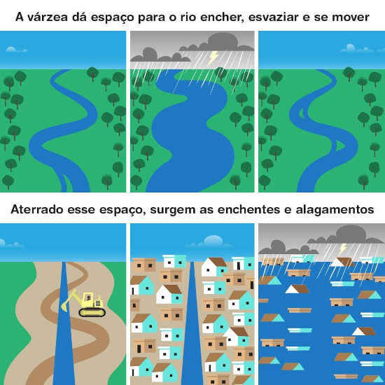
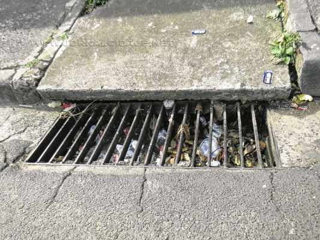
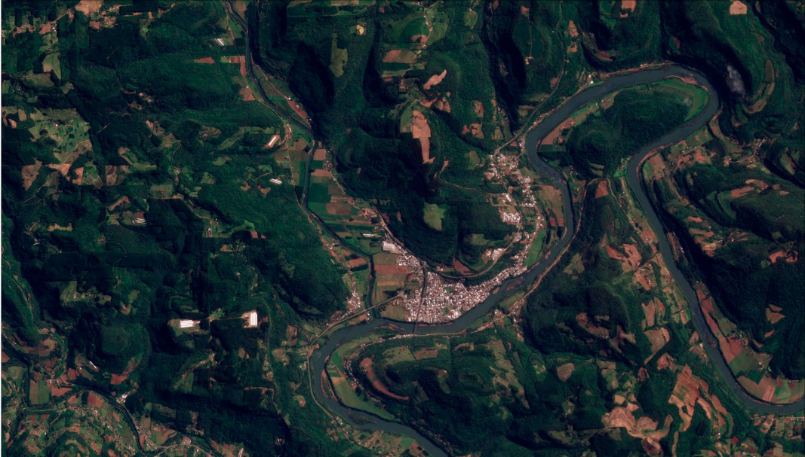
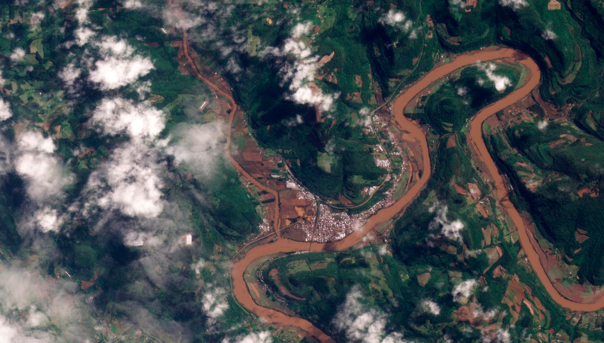
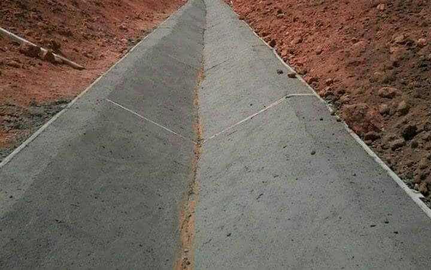
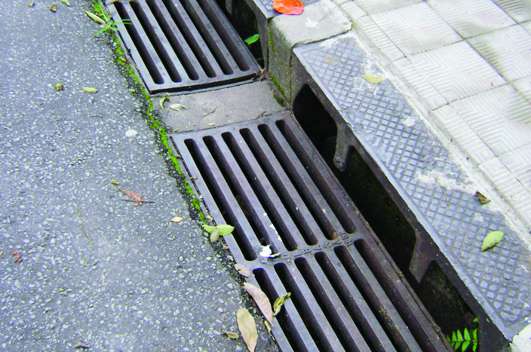

Enchentes
As enchentes tem diversas causas, tanto naturais quanto antrópicas, e geram várias consequências. As chuvas intensas podem deflagrar eventos naturais como inundações, alagamentos e enchentes, que vem sendo intensificados, principalmente nas áreas urbanas, pelas ações dos humanos.
{kind=link}
{kind=link}
{kind=link}
{kind=link}
De acordo com o site camara.leg.br, o Brasil é 6º país do mundo que mais sofre com catástrofes climáticas."O Brasil é atualmente o sexto país do mundo que mais sofre com catástrofes climáticas, segundo a Organização das Nações Unidas."
Depoimento de vítimas
"Embora a seca seja o desastre natural mais comum por aqui, principalmente no Nordeste, as inundações são as mais devastadoras, porque trazem consigo vendavais, deslizamentos de terra, enxurradas. Uma em cada três tragédias no Brasil está nesta categoria - foram mais de 10 mil registros oficiais entre 1991 e 2010."
"Em cinco minutos perdemos o que construímos. Eu moro de aluguel e não sei se a casa ainda está lá. Ficou apenas o telhado para fora."
Causas
Alguns dos fatores que contribuem para a propagação de enchentes são: a impermeabilização do solo, a falta de mecanismos de drenagem e o aumento de resíduos sólidos que contribuem para a obstrução das redes que drenam a água.
Impermeabilização do Solo
Ocorre quando a superfície do solo é coberta por materiais impermeáveis, como asfalto, concreto e edifícios, que não permitem a absorção natural da água da chuva pelo solo. Isso cria um aumento no escoamento de água, que pode sobrecarregar sistemas de drenagem e causar enchentes.
Nas áreas impermeabilizadas, a água da chuva flui rapidamente sobre as superfícies, formando enxurradas que podem inundar áreas baixas e sistemas de drenagem. Esse aumento no escoamento também pode causar erosão dos cursos de água.
Mecanismos de Drenagem
A falta de mecanismos adequados de drenagem é outra causa significativa de enchentes e inundações em áreas urbanas. Quando os sistemas de drenagem são insuficientes, inadequados ou obstruídos, a água da chuva não consegue ser escoada de maneira eficaz, o que leva a vários problemas.
Em muitas áreas urbanas, os sistemas de drenagem não conseguem lidar com o volume de água da chuva durante tempestades intensas. Isso pode ocorrer devido ao subdimensionamento dos sistemas existentes, falta de manutenção ou um rápido crescimento urbano que excede a capacidade de escoamento do sistema.
Resíduos Sólidos
Os resíduos sólidos, incluindo plásticos, folhas, galhos de árvores, embalagens, papel e outros detritos, frequentemente são descartados nas ruas ou nas bocas de bueiros. Quando chove, esses materiais são arrastados pela água da chuva e podem se acumular em canais de drenagem, bueiros e tubos, obstruindo o fluxo de água.
Consequências
As consequências das enchentes podem incluir a destruição de casas, edifícios e infraestrutura urbana em geral, deslocamento de poluentes químicos, perda da biodiversidade, além do risco iminente de perdas humanas e animais.
Danos ambientais severos
As enchentes acarretam sérios danos ambientais, resultando na perda da biodiversidade, poluição da água e destruição de habitats naturais.
Além disso, a erosão do solo e o deslocamento de poluentes agravam os impactos, comprometendo a qualidade do solo e aumentando os riscos à saúde humana. A implementação de medidas sustentáveis torna-se crucial para mitigar esses danos e promover a resiliência ambiental.
Imagens aéreas antes da tragédia:
30 de agosto em Muçum - Rio Grande do Sul
Imagens aéreas após a enchente:
6 de setembro em Muçum - Rio Grande do Sul
Deslocamento de populações
As enchentes, ao forçarem a evacuação de comunidades inteiras, não só resultam em deslocamento humano em larga escala, mas também deixam uma marca psicossocial profunda. A retirada abrupta e a incerteza geram não apenas desafios práticos, mas também impactos emocionais significativos, como estresse, ansiedade e tristeza.
O apoio psicossocial torna-se crucial nessas situações, visando não apenas à reconstrução física, mas também à resiliência mental e emocional necessária para superar as adversidades.
Soluções
Existem diversas ações que podem previnir a ocorrência de enchentes em áreas urbanas. Uma das principais medidas é a construção de sistemas eficientes de drenagem, que possam escoar a água da chuva de forma adequada. Além disso, a desocupação de áreas de risco e a diminuição dos índices de impermeabilização do solo também são medidas importantes para prevenir enchentes em áreas urbanas, assim como a construção de reservas florestais nas margens dos rios que podem ajudar a prevenir as enchentes.
Soluções de engenharia
Projetos de macrodrenagem Esses tipos de projetos oferecem uma obordagem ampla para o gerenciamento das enchentes, previnindo e/ou diminuindo os impactos negativos.
- Canalização de Rios e Córregos
- Piscinões
- Sistema de Alerta
- Bacias de Detenção e Retenção
- Canaletas e Sarjetas
Piscinões

Canaletas e Sarjetas
 Pavimentos permeáveis
Esse tipo de pavimento oferece um grande impacto na solução de enchentes e também no design urbano, sendo suas vantagens:
- Infiltração de Água
- Estética e Versatilidade
- Controle de Erosão
- Redução do Efeito de Ilha de Calor
Pavimentos permeáveis